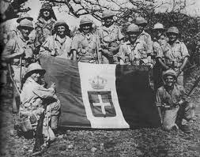
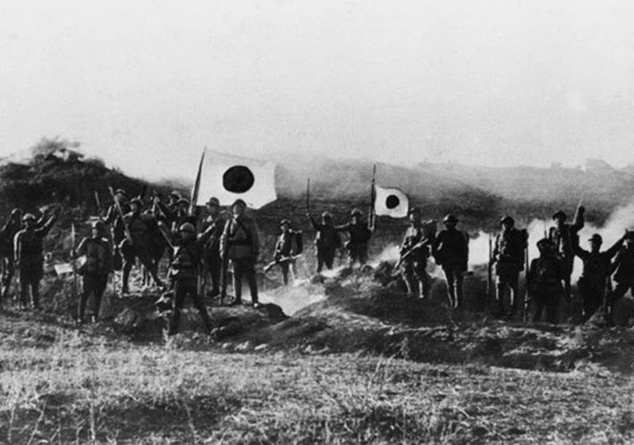
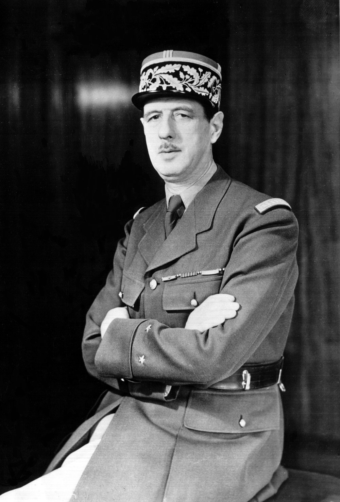
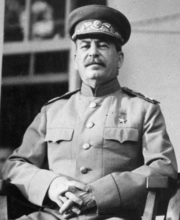

Sudionici
Sile osovine
Njemačka
Suprotno uvriježenom mišljenju, Njemačka u vrijeme izbijanja rata za njega nije bila spremna, odnosno, po objektivnim kriterijima, bila je u mnogo inferiornijem položaju s obzirom na stanje na početku Prvog svjetskog rata 25 godina ranije. S druge strane, u kvalitativnom smislu bila je u velikoj prednosti u odnosu na svoje protivnike. More ...

Italija
Brojčano, od svih rodova vojnih snaga, talijanska mornarica je do pred Drugi svjetski rat toliko ojačala da je mogla biti ozbiljnim protivnikom i francuskoj i britanskoj mornarici. Time je postala 3. po snazi u Europi. Najkvalitetniji dio mornarice zasigurno su činile diverzantske postrojbe, tzv. ljudi žabe, koje su tijekom rata imale brojne uspješne akcije. More ...

Japan
Od svih velikih sila Japan je godine 1939. imao najviše ratnog iskustva, zahvaljujući svojem pohodu na Kinu koji ne samo da je na početku postigao spektakularne uspjehe, nego je bio i sjajna prilika za testiranje novih tehnologija, pogotovo na mornaričkom i zrakoplovnom polju. More ...
Saveznici
Velika Britanija
Velika Britanija godine 1939. ušla je u rat s planovima prilično sličnima onima s kojima se ušlo u Prvi svjetski rat. Britanske kopnene snage bile su relativno malobrojne i profesionalne naravi, te su se na početku trebale koristiti u ograničenim akcijama, odnosno kao potpora brojnijoj francuskoj vojsci, sve do trenutka kada se popuni novacima. More ...

Francuska
Francuska je 1939. godine bila pod snažnim utjecajem iskustva prvog svjetskog rata koje se odrazilo kako na vojnu doktrinu, tako i na moral nacije. Francuzi su zbog ofenzivne taktike u Prvom svjetskom ratu pretrpjeli velike gubitke u ljudstvu. Zato su u ovaj rat odlučili ući defenzivnije. Takvom je doktrinom postavljena poznata "Maginotova linija" koja se protezala uz granicu s Njemačkom, a držalo se da je neprobojna. Francuzi su zbog velikih troškova odlučili da na belgijskoj granici ne naprave takvu liniju, no to su napravili i zato da bi potakli Belgiju da više surađuje sa Saveznicima. Francuska vojna oprema bila je zastarjela, osim tenkova koji su bili najsuvremeniji u svijetu, no nisu došli do izražaja u ratu zbog krive taktike.More ...

Sovjetski savez
Ovdje se podaci o Sovjetskom Savezu iznose među "saveznicima", makar je na početku rata SSSR bio zapravo bio saveznik Njemačke, a u toj državi je spomen "savezničkih" država asocirao na neprijateljstvo prema tim zemljama koje su tijekom Ruskog građanskog rata 1918. – 1922. god. svakom vrstom pomoći – uključujući i slanje vojnih postrojbi – stale na stranu kontrarevolucionara. Kasnije je, međutim, Sovjetski savez ratovao na istoj strani saveznika, i njegov je doprinos pobjedi nad Njemačkom prvorazredan: računa se da je 3/4 njemačkih vojnika poginulih tijekom rata – poginulo u sukobima s Crvenom Armijom.More ...

SAD
Zbog oceana koji su ih odvajali od Europe i Azije, te u domaćoj politici vladajućeg izolacionizma, SAD su 1930-ih vrlo malo ulagali u obranu, držeći kako će se budući rat izbjeći, odnosno da SAD u njemu neće sudjelovati. No izuzetak je bila mornarica, koja se razvijala sve više i više. Imali su sve tipove brodova, a posjedovanje mnogih oceanskih otoka omogućilo je izgradnju luka izvan matičnog kopna.More ...